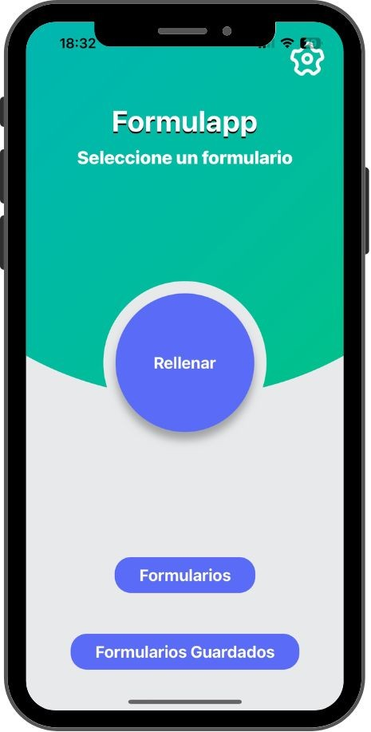

FormulApp
Joel Test & CMMI Data Management
Evaluación de Metodologías y Gestión de Datos
React Native
Expo
SQLite
UI-Kitten
Git
Jira
Presentado por: Patricio Lobos y Benjamín Parra
Scrum Masters del Proyecto
